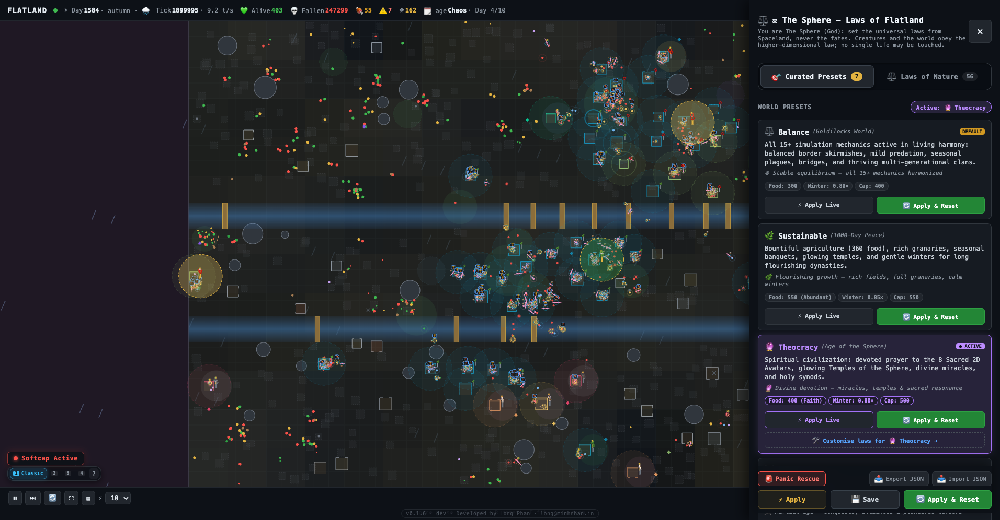
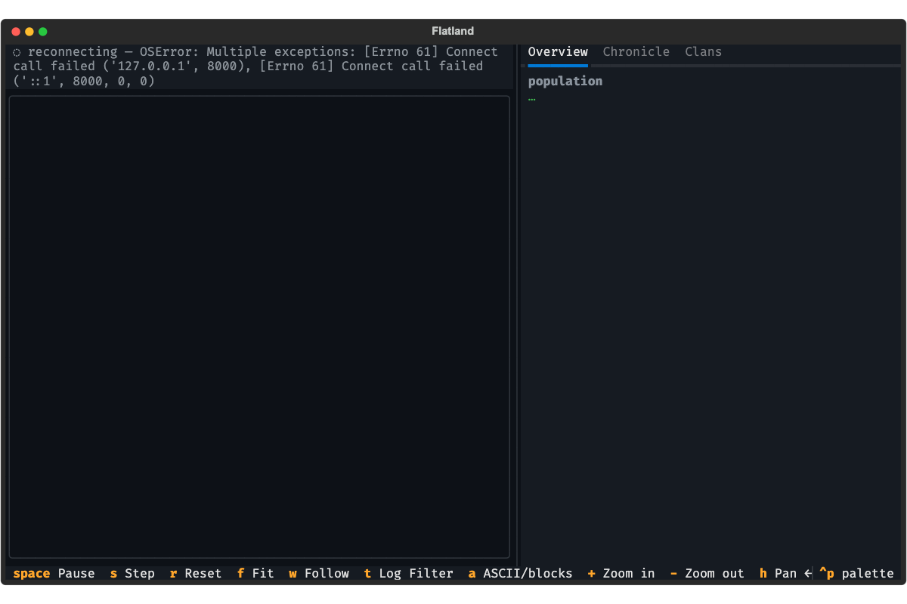
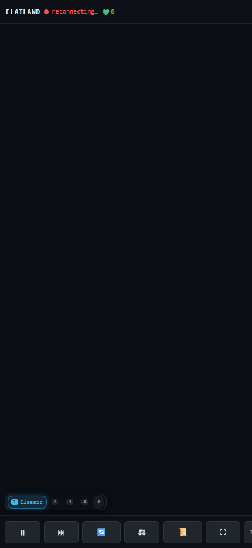
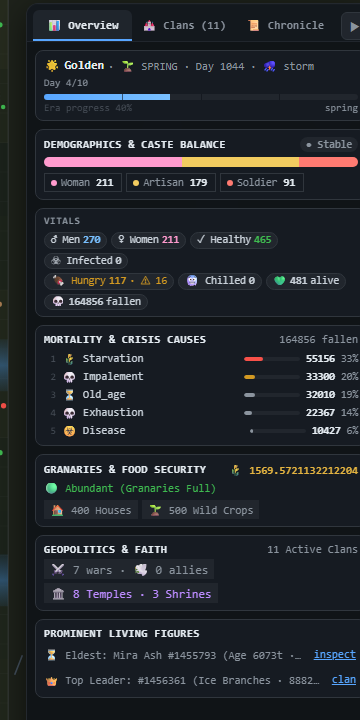
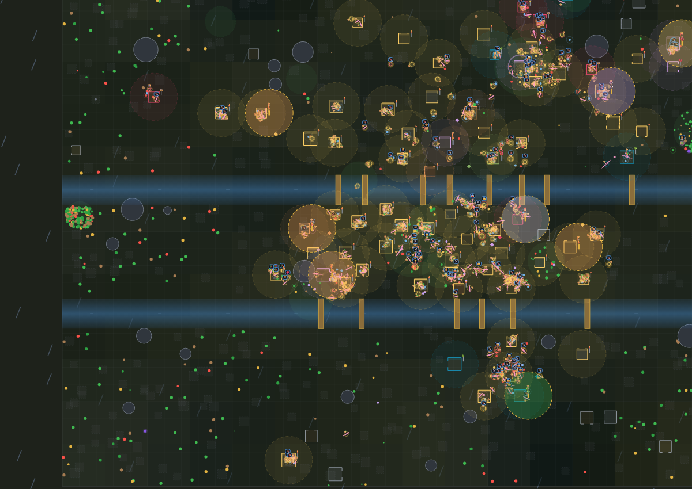

The autonomous artificial life ecosystem for the age of agents. Watch geometry live, build, and evolve under immutable natural laws. Developed from Edwin A. Abbott's 1884 classic.
Flatland is an open playground for multi-agent dynamics, artificial life research, and mathematical modeling.
Embraces Abbott's core 1884 premise—2D spatial constraints, vertex hierarchies, and generational ascendance—evolving into an authentic autonomous ALife ecosystem.
God (The Sphere) governs exclusively through universal laws: metabolism, density damping, and seasonal climate cycles. Zero hand of God touches individual fates.
Organisms form clans, construct houses, stockpile granaries, and elders transmit highest skill masteries to sleeping youth through indoor oral lore.
Physical form determines societal role. Side counts govern perception and longevity, while razor apex angles dictate kinetic piercing damage.
With two long sides and an acute apex, Isosceles soldiers are natural combatants. Over generations, peaceful lineages undergo generational creep (+0.5° per generation) until promoting to regular Equilateral Artisans.
Flatland is governed by mathematical principles, recurrent neuroevolution, and biological homeostasis calibrated from Spaceland.
Every organism is powered by a 295-parameter evolvable neural network (16 → 12 → 7). 16 sensory raycasting inputs process obstacle distance, food nutrient scent gradients, kin presence, predator proximity, and internal metabolic starvation ratios. 12 recurrent hidden units provide continuous temporal memory across ticks, enabling complex kiting, forage navigation, and buddy-trust bonding.
Organisms possess polar coordinate genomes (r_i, φ_i) with vertex counts K ∈ [3, 64]. Green-Gauss and Shoelace formulas dynamically bake rotational inertia (I_zz), area, razor apex angle (θ_min), and kinetic pierce multipliers. Evolutionary Annealing transitions from strict Abbott orthodoxy (λ = 1.0) over 250 generations down to λ → 0, unlocking unconstrained speciation, veteran battle scars, and ancestral starburst coronas.
Ecosystem equilibrium is maintained through dual automated feedback forces. When approaching carrying capacity (K_cap = 400, ceiling 500), Density Soft-Cap Damping (ξ) activates quadratic birth suppression, +35% crowding metabolic burn, and resource throttling. When population drops to famine thresholds (K_safe = 0.3 × K_cap), Extinction Safeguards (η) grant emergency relief and trigger a divine Genesis Miracle at critical floor K_crit = 12 to reseed the world.
Multi-objective utility AI replaces hard-coded trees, scoring actions against survival, duty, and heritable traits (brave, cautious, altruistic, builder). Organisms maintain spatial mental waypoints (home, rich_food, danger). Resting elders transmit highest skill masteries (🌾 Farming, ⚔️ Combat, 🦴 Foraging, 🌿 Healing) to sleeping youth through indoor oral lore, while rival clans rally behind Sacred Avatars, wage Casus Belli wars, or barter via trade caravans.
Universal natural laws calibrated in Spaceland. Inspect how carrying capacity, metabolism, and food abundance shift across presets.
Goldilocks harmony tuned for 200–350 inhabitants with carrying capacity 400, gentle wars, rare predation, agriculture, soft-cap damping (ξ), and flourishing multi-generational clans.
High-resolution captures across the Web Client, The Sphere God Panel, Terminal TUI, and Mobile viewports. Click any capture to view in full resolution.





FastAPI backend, native C OpenMP engine, WebSockets streaming, and React 18 Canvas rendering.